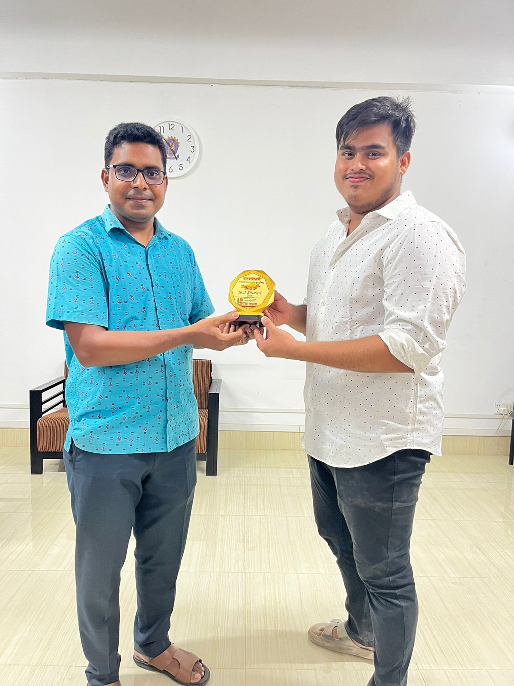
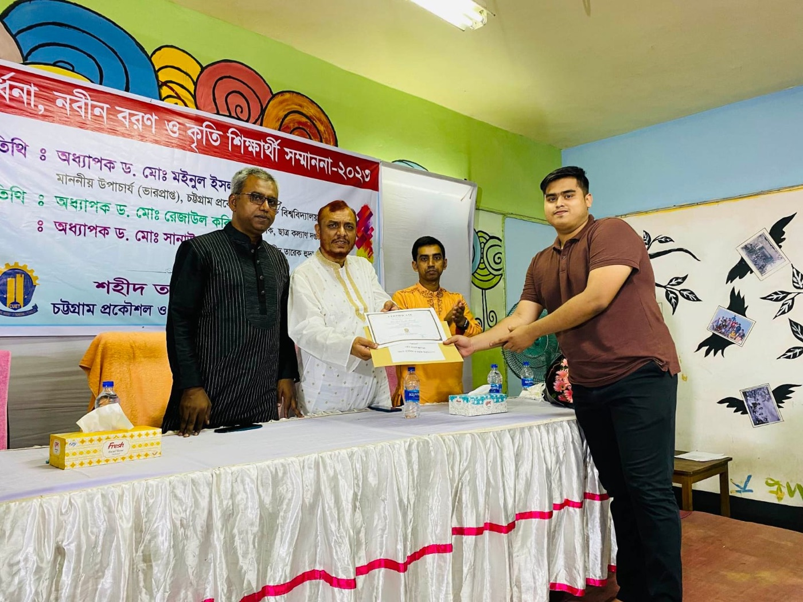

EDGE Applied Modeling Program
Completed 80 hours across GIS, HEC-RAS, HEC-HMS, and Google Earth Engine.
Lecturer in Civil Engineering, PCIU
Asnaful Huda Asnaf is a Bangladeshi water resources engineer focused on hydrology, open-channel hydraulics, flood risk, GIS analysis, and sustainable water management. His work connects river modeling, industrial water use, and climate-sensitive planning.

Profile
Asnaful completed his Bachelor of Science in Water Resources Engineering at Chittagong University of Engineering & Technology. His academic direction is centered on higher study and applied research in hydrology, hydraulics, environmental water management, and geospatial analysis.
Projects

Studied flood control, drainage, irrigation, coastal embankments, riverbank protection, surveying, sediment management, and hydraulic structures through site visits to the Karnafuli Irrigation Project, Halda River Basin, and Chattogram Flood Control Project.
Completed 80 hours across GIS, HEC-RAS, HEC-HMS, and Google Earth Engine.
Research & Publication
Each entry opens a dedicated research page with abstract, context, methodology, findings, citation information, and related work.
Resume
Port City International University, Bangladesh.
Chittagong University of Engineering & Technology. CGPA 3.70 out of 4.00.
Flood control, irrigation, drainage, riverbank protection, and hydraulic structures.
Contact